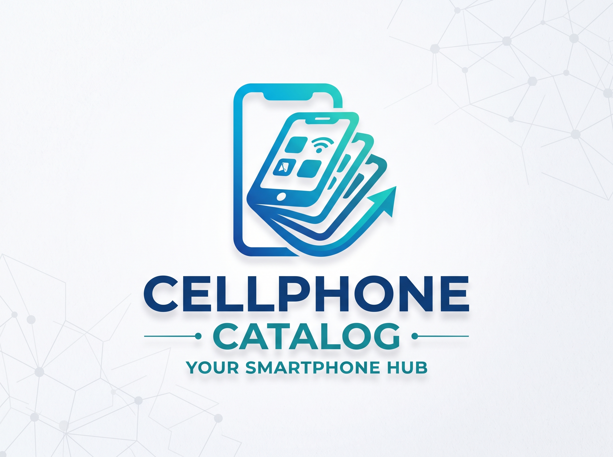
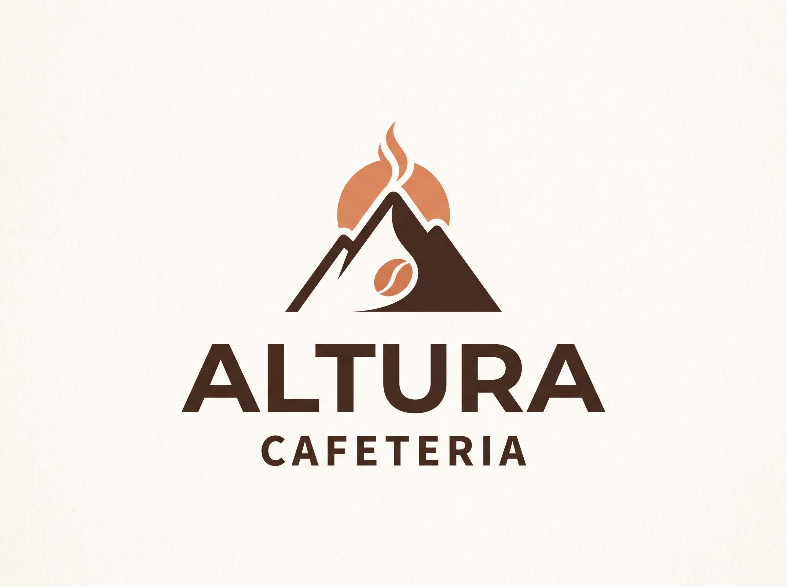

Desarrollo Web & IA
Creación de sitios modernos utilizando HTML5, CSS3 y WordPress (nivel avanzado). Optimizo sustancialmente los tiempos de desarrollo e implementación integrando flujos asistidos por Inteligencia Artificial.
Especializado en diseñar, construir y optimizar soluciones digitales robustas. Conecto la ingeniería de sistemas con flujos de trabajo eficientes asistidos por Inteligencia Artificial.
const engineer = {
role: 'Systems Engineer',
specialty: 'Web & AI Dev',
stack: ['WordPress', 'Python'],
agile: true
};Ingeniería aplicada al desarrollo ágil, optimizando tecnologías tradicionales mediante Inteligencia Artificial.
Creación de sitios modernos utilizando HTML5, CSS3 y WordPress (nivel avanzado). Optimizo sustancialmente los tiempos de desarrollo e implementación integrando flujos asistidos por Inteligencia Artificial.
Especializándome de forma continua mediante programas avanzados de Inteligencia Artificial. Desarrollo de scripts, lógica y automatización de software con Python a nivel intermedio.
Manejo de Blender a nivel intermedio para la conceptualización de entornos y modelado 3D. Potenciado con el uso de Photoshop para la edición y optimización de recursos gráficos web.
Conocimientos intermedios en diagnóstico, soporte técnico y reparación de dispositivos móviles. Manejo complementario de Excel para análisis y gestión de la información.
Una vitrina de soluciones que demuestran mi capacidad para combinar el código limpio con herramientas vanguardistas.

Desarrollo de una plataforma web integral autoadministrable en WordPress.

Sitio web de alto impacto construido con maquetación pura (HTML5/CSS3). Desarrollo asistido por IA para acelerar el despliegue y la refactorización de código.
Como Ingeniero en Sistemas, entiendo la tecnología como un puente indispensable entre la lógica de backend y el impacto visual del frontend.
Me apasiona adoptar metodologías vanguardistas y optimizar interfaces que no solo luzcan profesionales, sino que resuelvan problemas eficientemente. Mi enfoque actual combina el desarrollo robusto con soluciones automatizadas impulsadas por Inteligencia Artificial.
Más allá del código: Cuando apago el entorno de desarrollo, canalizo mi creatividad en la producción de música electrónica utilizando FL Studio (nivel avanzado), un espacio donde las estructuras lógicas se transforman en diseño sonoro.
Estoy disponible para colaborar en proyectos desafiantes y aportar soluciones eficientes de desarrollo web e ingeniería.